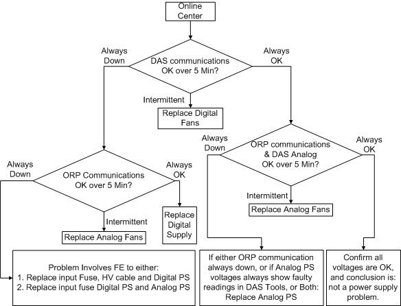

Operating Documentation
Direction 5193755-800, Rev# 8
BrightSpeed (Ltd. Access) Service Methods - Adv
Operating Documentation |
| Last Revised: | November 2004 |
This document defines more detailed troubleshooting information regarding the GDAS-16 power supplies. See GDAS-16 Theory Section 5, for other general information regarding power supply operation and block diagrams.
See Illustration 1 for the block diagram that shows the power supply interconnects.
Illustration 1: GDAS-16 Power supply block diagram

The GDAS-16 fuse box is just a single fuse and switch. This is the fuse that is spoken of for any subsequent troubleshooting actions.
| The GDAS-16 center backplane may still have a 12V test point due to the desire to have common backplanes between MDAS and GDAS-16. The 12V test point is NOT used with a GDAS-16 so there will be no voltage seen at this test point. | |
The table below defines the dependencies between the two GDAS-16 power supplies regarding the potential failure modes and effects of those failure modes. This table should be used as a reference as to what system issues are seen, what should be checked and what the potential FRU replacement needs to be. This is just a guide as not all potential symptoms/actions can easily be covered.
Table 1: GDAS-16 power supply Failure mode effects
| Failure mode | Digital PS | Analog PS | Digital Fans | Analog Fans | System errors seen | Physical Symptom | Actions/Potential FRUs |
| Pre-Regulator | Fail | Maybe Fail | OK | OK | All Communications Down (Slipring, ORP, DAS) | "ALL VOLTAGES at 0V or PULSING, FUSE MAY/MAY NOT BE BLOWN" | Check Fuse, Digital Supply, possible damage to Analog supply. |
| Digital Inverter | Fail | OK | OK | OK | Slipring and DAS Communication down, ORP OK | "5V_L AND 12V OFF, 5V_A AND 24V OK" | Digital supply |
| Analog Inverter | OK | Fail | OK | OK | DAS up but cannot communicate, ORP communication down | "5V_A AND 24V OFF, 5V_L AND 12V OK" | Analog Supply |
| 12V Regulator | Fail | OK | OK | OK | DAS and ORP communication OK, no fiber data | "12V OFF, 5V_L, 5V_A AND 24V OK" | Digital supply |
| 5V_L Regulator | Fail | OK | OK | OK | DAS communication down, ORP OK | "5V_L OFF, 12V may be low, 5V_A, 24V OK" | Digital supply |
| 24V Regulator | OK | Fail | OK | OK | DAS UP but cannot communicate, ORP communication down | "24V OFF, 12V, 5V_L, 5V_A OK" | Analog Supply |
| 5V_A Regulator | OK | Fail | OK | OK | DAS Communication OK, low Analog PS Voltages, ORP communication OK | "+/- 5V_A OFF, 24V may fluctuate, 12V, 5V_L OK" | Analog Supply |
| Digital Fans | Maybe Fail | OK | Fail | OK | DAS and ORP communications intermittant or DAS reboots intermittanly | "Digital PS Fan(s) Weak, 5V_L AND 12V PULSES @ 2MIN rate, 24V, +/-5V_A MAY PULSE @2MIN rate" | Fans in Digital Supply |
| Analog Fans | OK | OK | OK | Fail | DAS up but DAS and ORP communication intermittant | "Analog PS Fan(s) Weak 24V, 5V_A PULSES @ 2MIN rate, 5V_L AND 12V OK" | Fans in Analog Supply |
| HV Cable | Maybe Fail | Maybe Fail | OK | OK | Slipring and ORP communication down | "ALL VOLTAGES at 0V, FUSE BLOWN" | Check Fuse, HV Cable, possibly Analog and Digital supplies. |
| Fans not plugged in | OK | OK | OK | OK | Slipring and ORP communication down | DAS Plenum Fans are ON, SOME PS FANS OFF, No PS output voltages | Ensure both Digital and Analog Fans are plugged in, check HV connector continuity and that it is completely plugged in. |
| Input Fuse Blown | Maybe Fail | Maybe Fail | Maybe Fail | Maybe Fail | Slipring and ORP communication down | DAS Fans are OFF, PS FANS are OFF, No PS output voltages | Check FUSE, ANALOG AND DIGITAL SUPPLIES, Check HV cable for short - replace if necessary |
Illustration 2 below shows an overview of an isolation process for GDAS-16 power supply problems.
Illustration 2: GDAS-16 Power Supply isolation process flowchart
